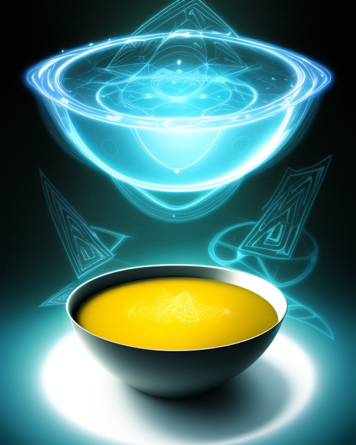

Title: The Quantum Soup of Nonsensical Realms: A Journey into the Absurd
In the kaleidoscopic realm of cosmic pancake unicorns and polka-dotted teacups, the existential penguins dance the tango with intergalactic marshmallows. Welcome to the enigmatic landscape where logic took a vacation, and chaos decided to throw an eternal party. As the clock-shaped watermelons tickle the ears of talking toasters, one can't help but ponder the intricacies of the interdimensional spaghetti that weaves through the fabric of reality like a hyperactive tap-dancing giraffe. Where does one draw the line between the absurd and the utterly preposterous? The answer, my friend, lies within the quantum goo of noodle-minded perplexities. Picture this: a symphony of rubber chickens playing Beethoven's fifth symphony while riding unicycles on a tightrope made of spaghetti. Meanwhile, clouds shaped like interpretive dance routines drift lazily across the sky, leaving trails of rainbow-colored toothpaste in their wake. Is this the dream of a mad scientist or the brainstorming session of a cosmic committee with a penchant for randomness? In this topsy-turvy universe, conversations between sentient clouds and philosophical rubber ducks take center stage. The language spoken is a melange of gibberish, nonsensical syllables thrown together like confetti in a hurricane. If you try to follow the logic, you'll find yourself in a labyrinth of linguistic contortions that defy the laws of grammar and coherence. Imagine a library where books write stories about themselves, and the librarians communicate in interpretive dance. The shelves are filled with volumes that contain the collected thoughts of talking potted plants and the memoirs of a time-traveling jellybean. Each sentence is a puzzle piece from a different dimension, creating a literary mosaic that only the bravest souls dare to decipher. Navigating this surreal landscape requires a compass that points in all directions simultaneously and a map drawn by a cartographer with a penchant for drawing squiggles that resemble the fingerprints of whimsical deities. As you traverse the nonsensical terrain, be prepared to encounter philosophical doorstops that engage in debates about the meaning of existence and sentient puddles of gelatinous laughter that communicate through interpretive squishing. In this world of utter absurdity, the laws of cause and effect have retired, leaving behind a vacuum filled with cosmic giggles and quantum hiccup harmonies. It's a place where time travels backward only to stop and ask for directions, and gravity takes a coffee break, allowing everything to float in a waltz of weightless wonder. So, dear reader, fasten your seatbelt made of spaghetti strands and prepare for a rollercoaster ride through the carnival of confusion. In this dimension of delightful disarray, the only rule is that there are no rules, and the only constant is the ever-changing kaleidoscope of whimsy that keeps the cosmic jesters entertained. Welcome to the playground of pandemonium, where the absurdity knows no bounds, and the only limit is the imagination's capacity to stretch into the infinite.